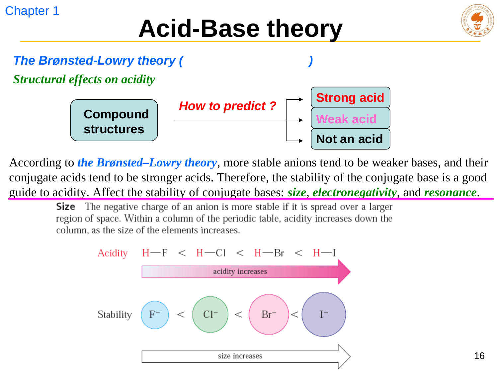
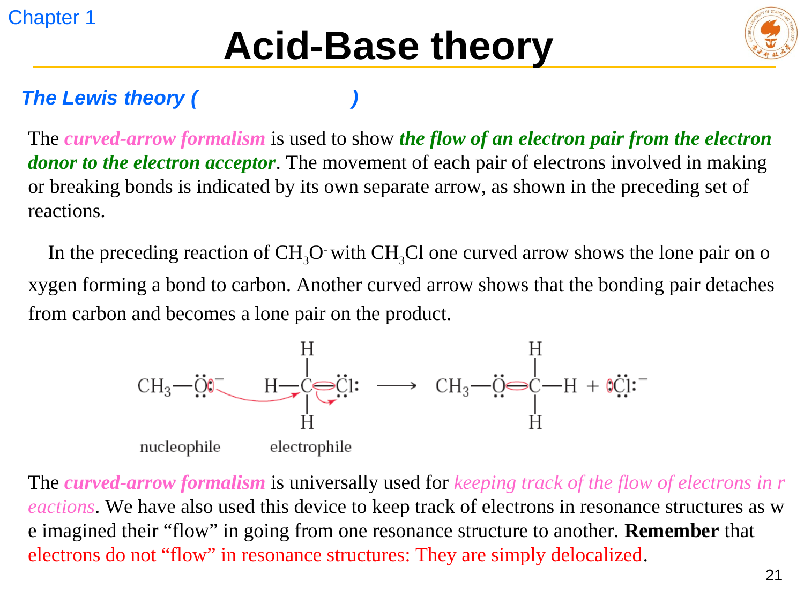

水溶液中使 H₃O⁺ 浓度增大的物质为酸，使 OH⁻ 浓度增大的物质为碱。它适合水溶液的酸碱计算，却无法直接解释没有 OH⁻ 的 NH₃ 为什么能呈碱性。
LECTURE 02 · CHAPTER 1
酸碱理论：强度与结构效应
Arrhenius, Brønsted–Lowry, Lewis acid–base theory and acidity trends
课堂速记修订课件原图公式释义词条交叉链接
1. 三种定义的适用范围
酸给出质子 H⁺，碱接受质子 H⁺。它将酸碱反应统一为质子转移，并自然引出共轭酸碱对。
Lewis 酸接受电子对，Lewis 碱给出电子对。范围最宽；质子只是一个特别强、特别小的 Lewis 酸。
若问题围绕 pH、Kₐ，优先用 Arrhenius 或 Brønsted–Lowry；若要画弯箭头、讨论配位键或有机机理，则用 Lewis 语言最直接。
HA + H2O ⇌ H3O+ + A−
这里 HA 是酸，A− 是其共轭碱；H2O 是碱，H3O+ 是其共轭酸。共轭对只相差一个质子。写反应时，弯箭头从碱的孤对或 π 键指向 H，断裂的 H–A 键电子对回到 A。
2. 用 Kₐ 与 pKₐ 比较酸性
Ka = [H3O+][A−] / [HA]
pKa = −log10Ka
Ka 是酸解离平衡常数，方括号表示平衡浓度。pKa 是 Ka 的负常用对数，因此数值越小，酸越强。常用经验：相差 1 个 pKₐ 单位约对应 10 倍 Ka；相差 3 个单位约对应 10³ 倍。
平衡的方向
质子转移通常偏向较弱的酸和较弱的碱一侧。比较 pKa 时，平衡倾向于较高 pKₐ 的酸一侧；这是一条判断方向的近似规则，仍要注意溶剂和相态。
3. 共轭碱越稳定，原酸越强
预测有机酸性最可靠的起点不是死背 pKₐ，而是问：失去 H⁺ 后的负电荷能否稳定？共轭碱越稳定，它越不急于夺回 H⁺，原来的酸就越容易解离。

同族元素中，较大的原子能把负电荷分散到更大体积，且 H–X 键往往更弱；例如 HI 比 HCl 酸性强。
同周期中，更电负的原子更能稳定负电荷；典型次序为 C–H < N–H < O–H < F–H 的酸性增强趋势。
若负电荷能在多个原子上离域，共轭碱明显稳定。乙酸根的两个氧等价分担负电荷，所以乙酸远比乙醇酸性强。详细画法见共振专题。
吸电子基团通过 σ 键拉低邻近负电荷的能量。作用随距离迅速衰减；例如卤素取代常增强相邻羧酸的酸性。
4. Lewis 语言与弯箭头
Lewis 碱提供一对电子，Lewis 酸接受该电子对。弯箭头从“电子对所在处”出发，指向“电子对最终到达处”；一根普通弯箭头表示一对电子，半头箭头才表示单电子过程。

与共振箭头的区别
反应机理中的弯箭头记录成键和断键的电子重新分配；共振式之间画的箭头只是用来生成另一种 Lewis 表示，真实分子没有电子在两幅图之间依次流动。
STUDY CHECK
5. 快速判断
Q为什么 CH₄ 和 C₂H₆ 几乎不显酸性？
A
去质子后会得到碳负离子；负电荷落在相对不电负的碳上，又没有共振或强诱导效应稳定。因此对应共轭碱很强，原酸的 pKₐ 极高。
Q强酸的共轭碱为什么弱？
A
强酸容易失去 H⁺，说明其共轭碱已相对稳定，对 H⁺ 的再结合驱动力较小。反过来，强碱的共轭酸通常是弱酸。